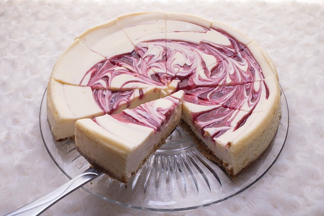

This problem is a Mooshak version of a SPOJ problem.

My birthday is coming up and traditionally I'm serving pie. Not just one pie, no, I have a number \(N\) of them, of various tastes and of various sizes. \(F\) of my friends are coming to my party and each of them gets a piece of pie. This should be one piece of one pie, not several small pieces since that looks messy. This piece can be one whole pie though.My friends are very annoying and if one of them gets a bigger piece than the others, they start complaining. Therefore all of them should get equally sized (but not necessarily equally shaped) pieces, even if this leads to some pie getting spoiled (which is better than spoiling the party). Of course, I want a piece of pie for myself too, and that piece should also be of the same size.
What is the largest possible piece size all of us can get? All the pies are cylindrical in shape and they all have the same height \(1\), but the radii of the pies can be different.
The first input line has one integer \(T\): the number of test cases. Then for each test case:
For each test case, output one line with the largest possible volume \(V\) such that me and my friends can all get a pie piece of size \(V\). The answer should be given as a floating point number with an absolute error of at most \(10^{−3}\).
| Example Input | Example Output |
|---|---|
3 3 3 4 3 3 1 24 5 10 5 1 4 2 3 4 5 6 5 4 2 | 25.1327 3.1416 50.2655 |
Content by Pedro Ribeiro (DCC/FCUP), migrated from www.dcc.fc.up.pt/~pribeiro/aulas/pc2627/problems/pc013.html to demonstrate the UC Design Kit.